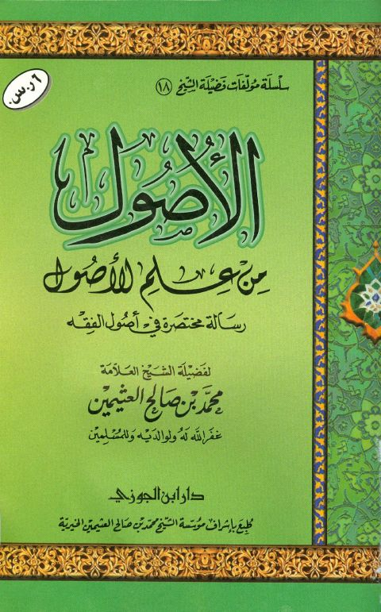

Downloads need an internet connection.
الأصول من علم الأصول رسالة مختصرة في أصول الفقه
Authors: محمد بن صالح العثيمين
Publishers: دار ابن الجوزي مؤسسة الشيخ محمد بن صالح العثيمين الخيرية
**▫️ العنوان: الأصول من علم الأصول رسالة مختصرة في أصول الفقه** ▪️ المؤلف: #محمد_بن_صالح_العثيمين ▫️ الناشر: #دار_ابن_الجوزي • #مؤسسة_الشيخ_محمد_بن_صالح_العثيمين_الخيرية ▪️ تاريخ النشر: 1430هـ 2009 م ▫️ بلد النشر: الدمام، #السعودية ▪️ الطبعة: 1 ▫️ عدد الأجزاء: 1 ▪️ الصفحات: 103 ▫️ نوع الوعاء: #كتاب ▪️ التصنيف الرئيسي: #الفقه_وأصوله ▫️ التصنيف الفرعي: #قواعد_أصولية ۪